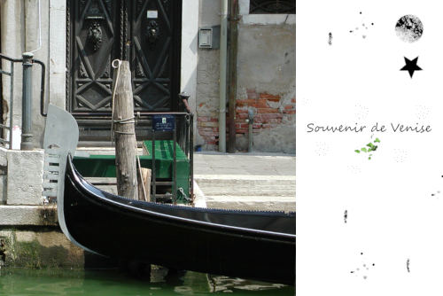
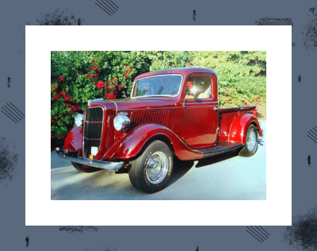

Procédures élémentaires de retouches d'images avec GIMP
- Duplication de l'image // faire une copie dans le format du logiciel .psd ou .xcf
- Verifier la qualité de l'image et sa résolution // TAILLE DE L'IMAGE
- Recadrer l'image // dimension & orientation // TAILLE DE L'IMAGE
- Suppression des imperfections // poussières, rayures, pixels manquants et détails disgracieux
- Contraste et plage de couleur
- Suppression d'une dominante de couleurs
- Réglage de la couleur et des nuances dans certaines parties de l'image pour (entre autres) faire ressortir
les tons clairs, moyens et foncés
- Renforcement de la netteté
Une photo de Venise

La camionnette

La peinture
PhotoMontage avec GIMP - Enfant